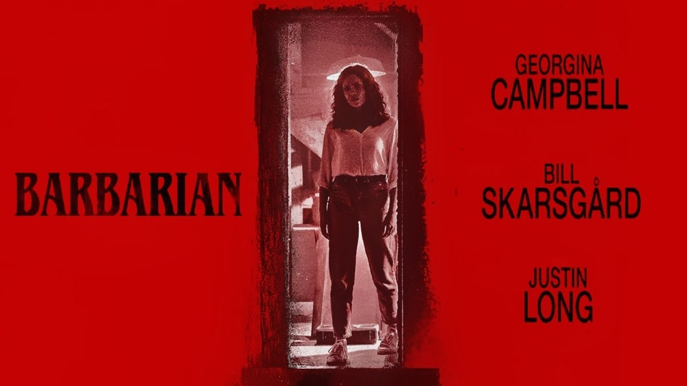
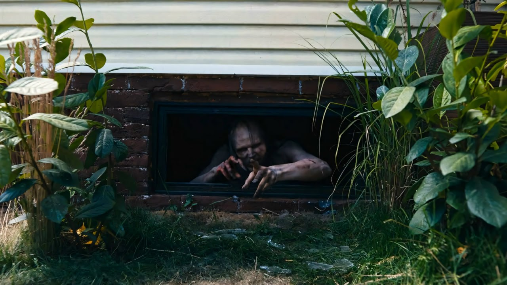
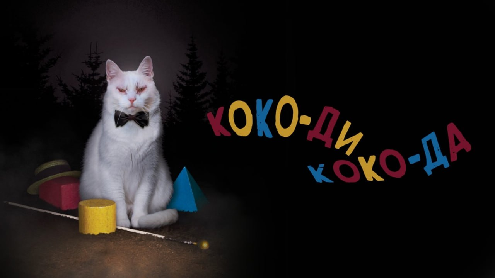
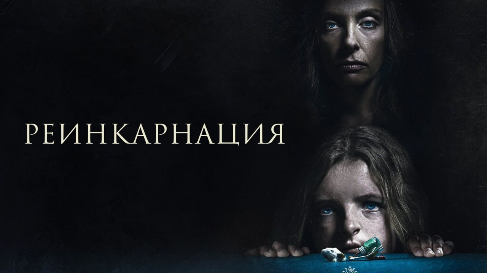
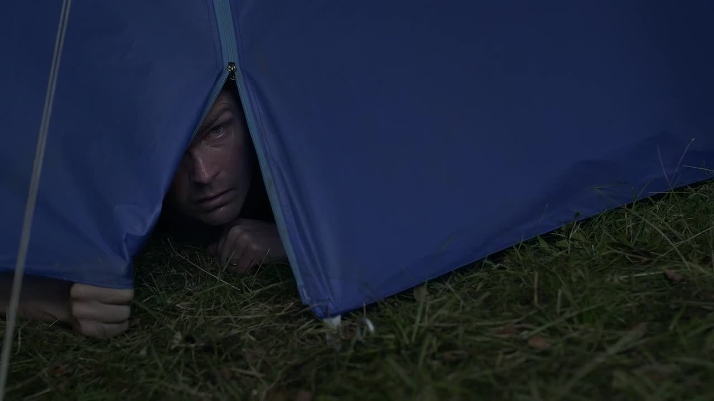
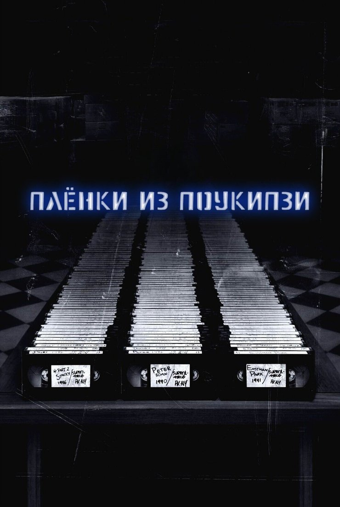

MDK
@mudak
MDK
@mudak
Хэллоуин близко а значит пора включить хоррор и потом до утра бояться собственного коридора. Собрали самые нишевые хорроры из каталога VK Видео после которых ты уже не скажешь да это же просто кино






Хэллоуин близко, а значит, пора включить хоррор и потом до утра бояться собственного коридора. Собрали самые нишевые хорроры из каталога VK Видео после которых ты уже не скажешь «да это же просто кино»
▪️ «Варвар», 2022 – приезжаешь в съёмную квартиру, а там уже поселился незнакомый мужик. В нормальном мире это повод развернуться и уйти. В этом фильме – только начало проблем.
▪️ «Коко-ди Коко-да», 2019 – пара отправилась в лес, чтобы наладить отношения. Но у леса оказались другие планы: временная петля, жуткие незнакомцы и ощущение, что этот день не закончится никогда.
▪️ «Реинкарнация», 2018 – умерла бабушка, и семья вдруг поняла, что у неё было слишком много секретов. Ари Астер снял не хоррор, а инструкцию, почему не стоит копаться в семейном прошлом. Особенно, если родственники явно что-то скрывали.
▪️ «Ведьма», 2015 – семья пуритан, лес, XVII век и козёл с очень подозрительной харизмой. Формально это исторический хоррор. По факту – причина больше никогда не доверять домашним животным.
▪️ «Плёнки из Поукипзи», 2007 – мокьюментари про найденные записи маньяка. Смотришь и периодически думаешь: «Так, а это точно актёры?» И главное – лучше не включать во время еды. Seriously
Сохраняем.
▪️ «Варвар», 2022 – приезжаешь в съёмную квартиру, а там уже поселился незнакомый мужик. В нормальном мире это повод развернуться и уйти. В этом фильме – только начало проблем.
▪️ «Коко-ди Коко-да», 2019 – пара отправилась в лес, чтобы наладить отношения. Но у леса оказались другие планы: временная петля, жуткие незнакомцы и ощущение, что этот день не закончится никогда.
▪️ «Реинкарнация», 2018 – умерла бабушка, и семья вдруг поняла, что у неё было слишком много секретов. Ари Астер снял не хоррор, а инструкцию, почему не стоит копаться в семейном прошлом. Особенно, если родственники явно что-то скрывали.
▪️ «Ведьма», 2015 – семья пуритан, лес, XVII век и козёл с очень подозрительной харизмой. Формально это исторический хоррор. По факту – причина больше никогда не доверять домашним животным.
▪️ «Плёнки из Поукипзи», 2007 – мокьюментари про найденные записи маньяка. Смотришь и периодически думаешь: «Так, а это точно актёры?» И главное – лучше не включать во время еды. Seriously
Сохраняем.